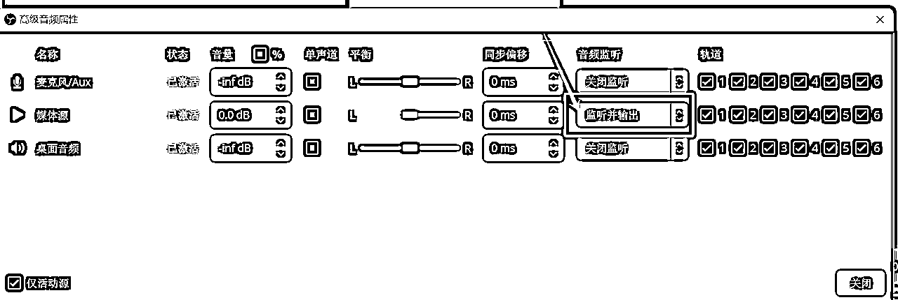

来源：https://nn5wp654xf.feishu.cn/docx/Hc1XdQV5mocZ8Vxs0KTcnn4InPb
从去年3月玩小红书店铺到现在，可以很负责任地告诉大家这个项目个人完全可以做，并且是可以一个人干到100多万利润的，去年线下见面我告诉了身边人小红书店铺的玩法，今年再次见面，少说赚了百万，多的几千万。有大学还没有毕业的大学生，也有初中毕业的人，自带锦鲤体质，去年见过我的人，听过我真诚分享的，今年都暴富了，好运传给今年见过我的朋友。为了能让我躺平，我把在国企上班的老公，逼成了创一代，原本是兼职干的，几乎变成了全职，然后还开了公司，一整个被迫创业。老公的执行力能力很强，有笔记爆过百万以上，正常账号一个月爆2次，但是他起爆过的账号，无论是原创还是混剪，笔记还能一个月一直爆，多次爆。因为我很不喜欢写文章，所以很少去分享，有写的不好的地方可以告诉我，我再更新。
今天给大家分享一下小红书笔记+直播（无人）笔直联动2.0玩法，直播时可以带动笔记加速曝光（笔记流量增加5倍），笔记又可以给直播间引流增加转化（用户通过笔记头像呼吸灯进入直播间），笔直联动，相辅相成，从而实现1+1＞2，也是现阶段小红书官方鼓励大家去做的一种玩法。
之前分享这个我以为大家都知道，就没有详细写，后来有好多人问我，今天就详细写一下操作，会的朋友忽略。
下载地址：https://obsproject.com/
在拼夕夕购买
剪映

https://www.xiaohongshu.com/zhibo/robs
https://redlive.xiaohongshu.com/live_login?live_redirect=true
这个号最近这两周跑出来的，当然已经有很多人在跟了，销量1万多，定价80，利润50%以上，此品退货率极低，已经赚了四五十万，24小时直播，场观11.5万，笔记跑出了大流量，直播可以推动笔记流量，笔记可以给直播间引流。
直播间通过笔记引流 这个是抖音的直播间，直接模仿一比一
看他的封面和标题
直播间上下滑，通过上下滑的方式进入直播间，流量大且泛，转化率最低，实测不到1%

发现频道，通过点击直播封面加入，流量排第二，转化率相对较高，实测约2%

笔记，在推荐频道，点击呼吸灯头像进入，或者在笔记详情中点击头像进入，流量最精准，转化率最高

小红书笔记发布+无人直播（真人）笔直联动 2.0玩法，对我们电商玩家提出了更高的要求，不仅要会直播，更要回归到小红书的基础盘，即小红书笔记。所以，去年通过笔记带货方式卖爆的产品，我们都可以再次通过笔直联动的玩法再爆一次！！！
我不善于写虚的文章，只能分享一些实操的干货，这几年，市面上在玩的所有的项目，觉得可以赚钱的，想玩的，我都去试过了一遍，比如TK，比如视频号，比如抖店，比如美团医疗店铺，比如快手，试下来觉得小红书是普通人，能够拿到结果最快的平台，三年前入局电商，我觉得这些大佬凭什么这么厉害，为什么动不动就能打出很好的数据，非常羡慕，但是我知道，他们只是一个时代的机遇，只要去入局深入研究，无非就是比我早做了一些，稳扎稳打，打出属于自己的基础盘。哪怕我这次风口没有抓住，但是在下次来临之前，我肯定比其他人先知道。无数的日夜，都是在测品，测笔记，测直播素材，起爆的时候，一整晚都在维护直播间，不断地更新玩法，不断研究，办公室有一个床 ，就是为了太晚就直接睡办公室。在电商圈里，我们经历过，拼命努力干活，但是还没有任何结果的日子，也体会过，拼命努力，还被合伙人背刺的日子，阳光总在风雨后！
希望每一个普通人都能找到属于自己的春天，相互交流，共同进步！